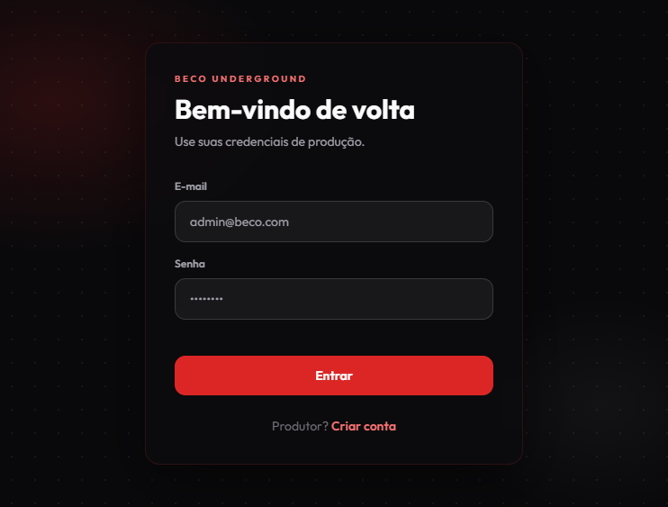
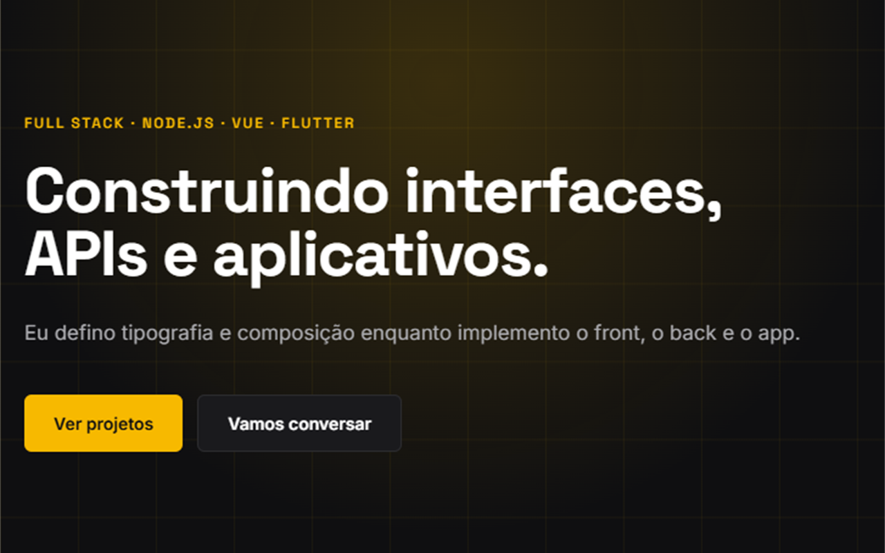

Caderneta do piloto
life.and.roads
O piloto guarda km, combustível e manutenção na viagem.
Ele também marca o último ponto no mapa. O dado fica no aparelho, o login é opcional e o schema .strict() do Zod recusa telemetria extra.
Full stack · Node.js · Vue · Flutter
Eu defino tipografia e composição enquanto implemento o front, o back e o app.
Projetos
A caderneta da estrada, o gestor da produção de evento e esta landing.
Caderneta do piloto
O piloto guarda km, combustível e manutenção na viagem.
Ele também marca o último ponto no mapa. O dado fica no aparelho, o login é opcional e o schema .strict() do Zod recusa telemetria extra.
Show independente

A produção concentra lineup e cachê neste sistema.
Esses dados ficam juntos, no jeito que o show é organizado.
Landing pessoal

Eu apresento o trabalho neste domínio.
O Netlify publica a raiz, sem etapa de build, e o domínio aponta para cá.
Ferramentas
O que usei no frontend, na API e no aplicativo mobile.
Ferramentas
Arraste
Perfil
Passei cinco anos em identidade visual e em sites feitos com HTML, CSS, JavaScript e WordPress, e tipografia, composição e hierarquia ocupavam o expediente inteiro, do briefing ao arquivo publicado, enquanto eu fechava a marca e a página na mesma entrega.
Estudo Engenharia de Software e construo o produto da escolha da interface ao contrato da API, com a prática de UI e UX definindo a modelagem, as permissões e o dado que o aplicativo recusa coletar.
A caderneta da moto guarda o percurso sem feed e o painel de evento tira a produção da planilha, dois sistemas que eu escrevi porque precisava deles no trabalho e na estrada e que ainda uso.
Peso e ritmo da página fazem parte do que eu desenvolvo.
Eu monto a regra de negócio e o layout, então os dois combinam do endpoint à UI.
Na graduação eu desenvolvo software para o que aparece no cotidiano.
Histórico
Do estúdio à graduação, e o design segue no que eu faço.
2019 a 2024
Entreguei marcas e sites. Letra e ordem da página eram o ofício e ainda uso as duas na página e nos sistemas.
2024 até hoje
A graduação está em andamento. Passei a focar em API, dados e mobile com Node, Vue, Flutter e MySQL, e isso ainda aparece no que eu programo. life.and.roads, Beco Underground e esta landing já rodam.
Hoje
Eu cubro a UI e o schema e escrevo a lógica do produto. Aceito vaga e parceria, do produto ao deploy.
Contato
Estou disponível para trabalho e parceria. LinkedIn, GitHub, e-mail e o PDF do currículo estão abaixo.